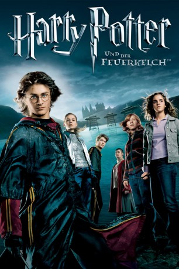

Auszeichnungen: für 1 Oscars nominiert 1 BAFTA-Awards gewonnen
 gesehen am 09.03.2015
gesehen am 09.03.2015Alternativ: Harry Potter and the Goblet of Fire
Auszeichnungen: für 1 Oscars nominiert 1 BAFTA-Awards gewonnen gesehen am 09.03.2015
 
 IMDB-Wertung: 7.7 / 10
IMDB-Wertung: 7.7 / 10  Metascore:
Metascore: 
Das große Abenteuer beginnt, als der Feuerkelch Harry Potters Namen freigibt und Harry damit Teilnehmer eines gefährlichen Wettbewerbs unter drei ruhmreichen Zauberschulen wird – des Trimagischen Turniers. Wer aber könnte Harrys Namen in den Feuerkelch geworfen haben? Jetzt muss er einen gefährlichen Drachen bezwingen, mit gespenstischen Wasserdämonen kämpfen und einem verzauberten Labyrinth entkommen – nur, um am Ende Dem-dessen-Name-nicht-genannt-werden-darf gegenüberzustehen.
Jahr: 2005
Dauer: 157 Minuten
FSK: 12
Land: England Studio: Warner Bros.Tonspuren: DD5.1 - ,
Untertitel:
Auflösung: 1080p (1920×800) Größe: 12902 MB
Genre: Abenteuer, Familie, Fantasy, Mystery
Regisseur: Mike Newell
Drehbuch: Steve Kloves, J.K. Rowling
Soundtrack: Patrick Doyle
Darsteller:
 Eric Sykes als Frank Bryce
Eric Sykes als Frank Bryce Timothy Spall als Wormtail, Peter Pettigrew
Timothy Spall als Wormtail, Peter Pettigrew David Tennant als Bartemius 'Barty' Crouch Junior
David Tennant als Bartemius 'Barty' Crouch Junior Daniel Radcliffe als Harry Potter
Daniel Radcliffe als Harry Potter Emma Watson als Hermione Granger
Emma Watson als Hermione Granger Rupert Grint als Ron Weasley
Rupert Grint als Ron Weasley Mark Williams als Arthur Weasley
Mark Williams als Arthur Weasley James Phelps als Fred Weasley
James Phelps als Fred Weasley Oliver Phelps als George Weasley
Oliver Phelps als George Weasley Bonnie Wright als Ginny Weasley
Bonnie Wright als Ginny Weasley Robert Pattinson als Cedric Diggory
Robert Pattinson als Cedric Diggory Jason Isaacs als Lucius Malfoy
Jason Isaacs als Lucius Malfoy Tom Felton als Draco Malfoy
Tom Felton als Draco Malfoy Robert Hardy als Cornelius Fudge
Robert Hardy als Cornelius Fudge Alex Palmer als Death Eater
Alex Palmer als Death Eater Roger Lloyd Pack als Bartemius 'Barty' Crouch
Roger Lloyd Pack als Bartemius 'Barty' Crouch David Sterne als Ministry Wizard
David Sterne als Ministry Wizard Katie Leung als Cho Chang
Katie Leung als Cho Chang Matthew Lewis als Neville Longbottom
Matthew Lewis als Neville Longbottom Robbie Coltrane als Rubeus Hagrid
Robbie Coltrane als Rubeus Hagrid Michael Gambon als Albus Dumbledore
Michael Gambon als Albus Dumbledore David Bradley als Argus Filch
David Bradley als Argus Filch Devon Murray als Seamus Finnigan
Devon Murray als Seamus Finnigan Afshan Azad als Padma Patil
Afshan Azad als Padma Patil Warwick Davis als Filius Flitwick
Warwick Davis als Filius Flitwick Frances de la Tour als Madame Olympe Maxime
Frances de la Tour als Madame Olympe Maxime Maggie Smith als Minerva McGonagall
Maggie Smith als Minerva McGonagall Alan Rickman als Severus Snape
Alan Rickman als Severus Snape Predrag Bjelac als Igor Karkaroff
Predrag Bjelac als Igor Karkaroff Brendan Gleeson als Professor Alastor 'MadEye' Moody
Brendan Gleeson als Professor Alastor 'MadEye' Moody Alfred Enoch als Dean Thomas
Alfred Enoch als Dean Thomas Jamie Waylett als Vincent Crabbe
Jamie Waylett als Vincent Crabbe Josh Herdman als Gregory Goyle
Josh Herdman als Gregory Goyle Miranda Richardson als Rita Skeeter
Miranda Richardson als Rita Skeeter Gary Oldman als Sirius Black
Gary Oldman als Sirius Black Henry Lloyd-Hughes als Roger Davies
Henry Lloyd-Hughes als Roger Davies Shirley Henderson als Moaning Myrtle
Shirley Henderson als Moaning Myrtle Ralph Fiennes als Lord Voldemort
Ralph Fiennes als Lord Voldemort Adrian Rawlins als James Potter
Adrian Rawlins als James Potter Geraldine Somerville als Lily Potter
Geraldine Somerville als Lily PotterDatei: X:\7+mehr(A-Z)\Harry Potter\Harry Potter 4 - und der Feuerkelch (2005, FSK12, 1920x800).mkv seit 15.02.2015
Festplatte: HD Collection-7+mehr(A-Z)+Person
 Es gibt insgesamt 17 Filme in der Gruppe '7+mehr(A-Z)\Harry Potter'
Es gibt insgesamt 17 Filme in der Gruppe '7+mehr(A-Z)\Harry Potter'